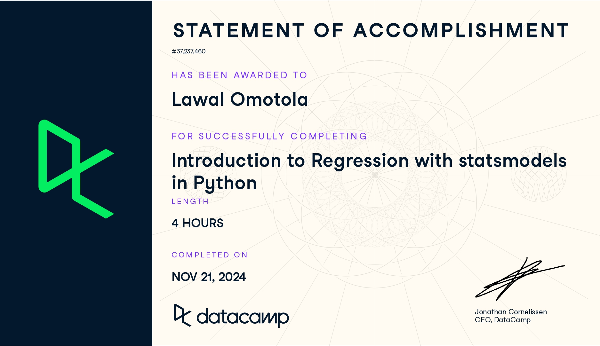
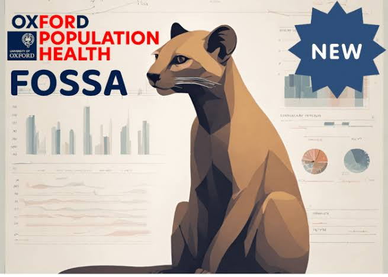
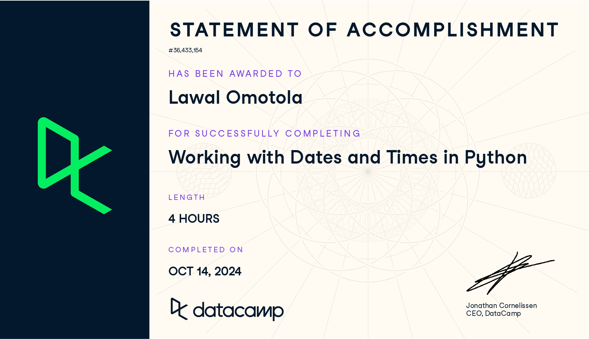

Omotola Ayodele Lawal
Home
Portfolio
Courses & Exercises
CV
Certification
Courses & Exercises
Categories
All
(18)
Geospatial
(2)
R
(13)
analysis
(10)
code
(17)
note
(7)
public health
(1)
python
(4)
r
(1)
statistic
(1)
Thematic Maps
code
note
Geospatial
R
After completing this course, I have gained the following skills:
Dec 1, 2024
The GRAPH Network
R for GIS
code
note
Geospatial
R
Geospatial analysis involves collecting, analyzing, and interpreting data tied to geographic locations and the characteristics of physical features or phenomena on Earth’s…
Nov 25, 2024
The GRAPH Network
Data Cleaning 2: Fixing Inconsistencies
code
note
R
Building on the knowledge from the previous lesson , where I explored various functions for diagnosing data issues, completing this lesson has enabled me to:
Nov 22, 2024
The GRAPH Network
Data Cleaning 1: Data Diagnostics
code
note
R
Data cleaning is the process of converting raw, “messy data” into reliable, analyzable information. This involves identifying and addressing
inaccurate
,
incomplete
, or
improb…
Nov 21, 2024
The GRAPH Network

COURSE 18 | INTRODUCTION TO REGRESSION WITH STATSMODELS IN PYTHON
code
note
python
Completing the course on
Introduction to Regression with statsmodels in Python
, I gained a comprehensive understanding of regression analysis and its application in Python.…
Nov 21, 2024
Omotola Ayodele Lawal
Lesson Notes: Intro to Functions and Conditionals
code
analysis
R
The R language revolves around two fundamental components: objects and functions. Objects are the data structures used to store information, while functions are the tools…
Nov 20, 2024
The GRAPH Network
Loops, Across, and Conditionals
code
analysis
R
Repetition is a fundamental concept in programming, often essential for automating tasks. In R, a
for loop
provides an efficient way to repeat a task multiple times, saving…
Nov 19, 2024
The GRAPH Network
Joining 2: Mismatched Values, One-to-Many & Multi-Key Joins
code
analysis
R
Building on the knowledge gained in Part 1 of the course on joining datasets in R, this lesson enhanced my ability to work with messier and more complex datasets. I learned…
Nov 18, 2024
The GRAPH Network
Intro to Joining Datasets
code
analysis
R
Joining datasets is an essential skill in health data analysis, enabling the integration of information from multiple sources for more comprehensive and insightful analyses.…
Nov 17, 2024
The GRAPH Network
Dates 2: Intervals, Components and Rounding
code
analysis
R
Building on the knowledge gained in Part 1 of the course on date analysis in R, this lesson helped me strengthen my ability to perform basic date analyses. I learned…
Nov 16, 2024
The GRAPH Network
Dates 1: Recognizing and Formatting Dates
code
analysis
R
Manipulating dates is a crucial skill in health data analysis, as date-related data, from patient admission dates to vaccination schedules, plays a vital role in…
Nov 13, 2024
The GRAPH Network
Factors in R
code
analysis
R
Factors are an important data class for representing and working with categorical variables in R.
Completing the course was crucial in helping me to have a strong…
Nov 12, 2024
The GRAPH Network
Working with Strings in R
code
analysis
R
Completing this course has made me proficient in string manipulation, a crucial skill for data scientists. Tasks such as cleaning messy data and formatting outputs rely…
Nov 11, 2024
The GRAPH Network Member

Fundamentals of Statistical Software & Analysis
statistic
public health
R
I completed the Fundamentals of Statistical Software and Analysis course, which comprises seven modules. The course is designed to teach students about statistical tests and…
Nov 10, 2024
Lawal’s note

COURSE 16: WORKING WITH DATES AND TIMES IN PYTHON
code
note
python
You’ll probably never have a time machine, but how about a machine for analyzing time? As soon as time enters any analysis, things can get weird. It’s easy to get tripped up…
Oct 17, 2024
Omotola Ayodele Lawal
COURSE 15: CLEANING DATA IN PYTHON
code
note
python
Dirty data can appear because of duplicate values, mis-spellings, data type parsing errors and legacy systems. Without ensuring that data is properly cleaned in the…
Oct 5, 2024
Omotola Ayodele Lawal
Joining data with Pandas
code
analysis
python
The pandas package is a powerful tool for manipulating and transforming data in python. However, when working on an analytics, the data needed could be in multiple tables.…
Sep 4, 2024
Omotola Ayodele Lawal
Conditional Mutation
code
analysis
r
This was a quiz on the topic:
Conditional Mutation
. You can find the project here
Sep 2, 2024
Omotola Ayodele Lawal
No matching items